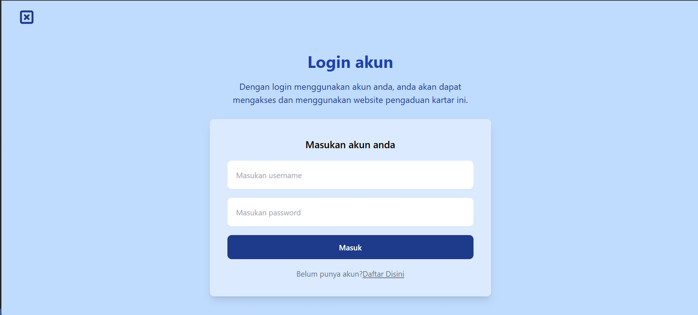

Detail Proyek
Kategori
Layanan Masyarakat
Platform
Website
Peran
Fullstack Developer
Bahasa
PHP
Detail Proyek
Frontend
Tailwind, javascript
Backend
PHP
Database
Mysql
Durasi : 2 Minggu
Selesai : Desember, 2024
TailwindCSS
JavaScript
Kategori
Layanan Masyarakat
Platform
Website
Peran
Fullstack Developer
Bahasa
PHP
Frontend
Tailwind, javascript
Backend
PHP
Database
Mysql
Website Layanan Pengaduan Resmi Karang Taruna RT 07 Ketegan adalah platform berbasis web yang dikembangkan untuk memfasilitasi warga dalam menyampaikan laporan, saran, kritik, maupun aduan terkait lingkungan RT 07 secara cepat, aman, dan terorganisir. Website ini menjadi salah satu bentuk digitalisasi pelayanan organisasi kepemudaan di tingkat RT.
Proyek ini dikerjakan sepenuh nya oleh saya sendiri
🎯 Tujuan Proyek
Memberikan kemudahan bagi warga dalam menyampaikan pengaduan atau
aspirasi, Meningkatkan transparansi dan akuntabilitas Karang Taruna
kepada masyarakat, Menjadikan Karang Taruna lebih responsif dan adaptif
terhadap kebutuhan warga.